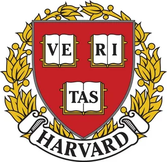
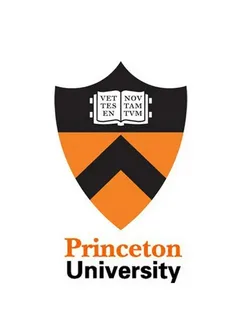
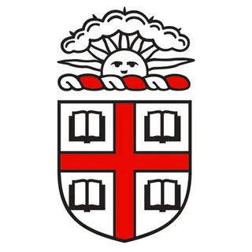
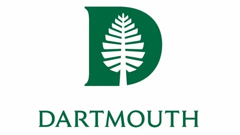
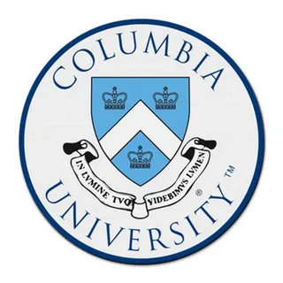
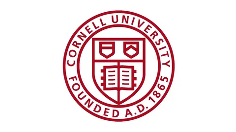
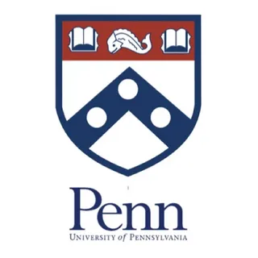

|
Гарвардский университет (Harvard)
Гарвард - старейший университет США, основанный в 1636 году. Изначально в
колледже обучались главным образом унитарное и конгрегационалистское духовенство.
Но позже течение 18 века, программы Гарварда становились более светскими,
и в конце XIX века колледж был признан центральным учреждением культуры среди элиты Бостона.
В 1900 году Гарвард стал одним из основателей Ассоциации американских университетов.
Сейчас же (2025г.) среди выпускников Гарварда 8 президентов США и около 150 нобелевских лауреатов.
Ссылка на сайт Гарвард |
 |
|
Принстонский университет (Princeton)
Принстонский университет — один из старейших исследовательских университетов США.
Основан в 1746 году и стал четвёртым колледжем британских североамериканских колоний.
Во время своего президентства Джон Уизерспун изменил направление университета,
сделав приоритетной подготовку нового поколения лидеров американской нации.
Для достижения этой цели он ужесточил академические стандарты и запросил инвестиции в университет.
После Принстон ждало ещё много изменений, но сейчас среди выпускников —
2 президента США, 12 Верховных судей США, множество миллионеров и глав иностранных дел.
Также с Принстоном связаны имена Альберта Эйнштейна, Джона Маркони, Александра Белла, Энрико Ферми, Роберта Оппенгеймера.
Ссылка на сайт Принстона |
 |
|
Брауновский университет (Brown)
Брауновский университет — один из наиболее престижных частных университетов США,
расположенный в городе Провиденс, штат Род-Айленд.
Это седьмой из старейших национальных университетов и один из девяти колониальных колледжей.
Основан в 1764 году как Колледж Род-Айленда, в 1804 году переименован в честь Николаса Брауна-младшего,
одного из выпускников университета и члена семьи Браунов, которые играли большую роль
в организации и администрации университета. Это первый колледж в США,
который принимал студентов независимо от их религиозной принадлежности.
Брауновский университет известен своей необычной учебной программой,
так называемой Новой программой, начатой в 1969 году. По этой программе студенты имеют полный выбор предметов
(нет обязательных предметов) и могут получать зачёт/незачёт вместо оценки по любому предмету,
если им так больше нравится. Либеральная программа обучения университета часто является предметом ссылок в популярной культуре.
Среди других известных выпускников — 8 миллиардеров, главный судья Верховного суда США,
4 госсекретаря США и другие должностные лица правительства США, 54 члена Конгресса Соединенных Штатов,
56 стипендиатов Родса, 52 стипендиата Гейтс Кембриджа, 49 стипендиатов Маршалла, 14 стипендиатов Макартура,
23 лауреата Пулитцеровской премии, различные члены королевской семьи и дворянства,
а также лидеры и основатели компаний из списка Fortune 500.
Сайт Брауновского университета |
 |
|
Дартмутский университе (Darmouth)
Дартмут - частный исследовательский университет, один из старейших в США.
Дартмут — не только колледж, в нём учатся аспиранты и ведутся научные исследования.
Это — один из девяти колониальных колледжей, основанных до Американской революции.
Выпускниками дартмутского колледжа являются: Теодор Гейзель, известный как Доктор Сьюз,
создатель популярного телесериала «Анатомия страсти» Шонда Раймс,
бывший министр финансов Тимоти Гайтнер.
Сайт Дартмутского университета |
 |
|
Колумбийский университет (Columbia)
Университет был основан в 1754 году как Королевский колледж, получив хартию от короля Англии Георга II.
Королевский колледж стал первым колледжем в Нью-Йорке и пятым колледжем на территории Тринадцати колоний.
С 1758 года Королевский колледж начал присваивать учёные степени. После Американской революции
в течение небольшого срока (1784—1787), он имел статус государственного учреждения.
В 1784 году включён в состав университета штата Нью-Йорк и переименован в колледж Колумбия.
С 1787 года является частным учебным заведением, управляемым советом попечителей.
В 1912 году колледжу присвоен статус университета.
Среди известных выпускников университета пять так называемых Отцов-основателей США,
29 лауреатов премии «Оскар» [1], 30 глав государств (включая четырёх президентов США), девять судей Верховного суда США.
В университете учились, преподавали или занимались научно-исследовательской деятельностью 104 Нобелевских лауреата.
Школой журналистики Колумбийского университета присуждается одна из самых престижных премий в области журналистики
— Пулитцеровская премия. Более 100 выпускников университета стали её лауреатами
(по этому показателю Колумбийский университет занимает 2-е место в США после Гарварда).
Среди выпускников также числится судья Конституционного Суда РФ — Лобов Михаил Борисович.
Сайт Колумбийского университета |
 |
|
Корнельский университет (Cornell)
Корнельский университет — один из крупнейших и известнейших университетов США.
Кампус университета находится в Итаке, штат Нью-Йорк (США).
Университет был основан в 1865 году Эзрой Корнеллом, бизнесменом и одним из создателей телеграфной индустрии,
а также Эндрю Уайтом, известным учёным и политиком. Университет является частным, но спонсируется и штатом Нью-Йорк.
Университет состоит из семи колледжей, рассчитанных на бакалавриат, и семи отделений постдипломного образования
(медицинский, ветеринарный факультеты, инженерный факультет, ориентированный на магистратуру, и так далее),
находящихся в его основном кампусе. В каждом колледже свои собственные требования к абитуриентам
и самостоятельные учебные программы.
Университету также принадлежат два медицинских кампуса: один в Нью-Йорке, а второй в Education City («Городе образования»),
находящемся в Катаре. За историю существования этого учебного заведения через него прошли 31 лауреат стипендии Маршалла,
28 лауреатов стипендии Родса, 41 лауреат Нобелевской премии.
Сайт Корнельского университета |
 |
|
Пенсильванский университет (University of Pensylvania)
Пенсильванский университет (широко известный как Penn или UPenn, англ. University of Pennsylvania)
— частный исследовательский университет США, расположенный в Филадельфии, штат Пенсильвания.
Основан в 1751 году Бенджамином Франклином. По данным четырёх основных глобальных университетских рейтингов,
стабильно входит в число 15 сильнейших университетов мира.
Пенсильванский университет — одно из старейших высших учебных заведений и первый университет в США,
а также один из девяти колониальных колледжей, основанных до подписания Декларации независимости.
Входит в элитную Лигу плюща.
По состоянию на 2025 год, среди выдающихся выпускников было 14 глав государств,
64 миллиардера (в том числе Илон Маск и Уоррен Баффет), 3 судьи Верховного суда США, 33 сенатора США,
44 губернатора США, 159 членов Палаты представителей США, 8 подписавших Декларацию независимости США,
12 подписантов Конституции США, 24 члена Континентального конгресса и два президента Соединённых Штатов,
в том числе Дональд Трамп.
Сайт Пенсильванского университета |
 |
|